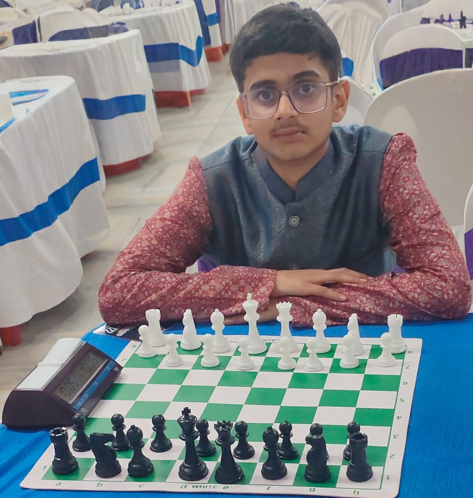

Author | Student | Creator

Krishay Prakash is a student, author, chess player, creative storyteller, and aspiring innovator from Bihar, India. Deeply driven by imagination, curiosity, and a desire to understand the mysteries of the world, he has cultivated interests that extend across literature, strategy, history, technology, folklore, philosophy, and human creativity. From an early age, he developed a fascination with unanswered questions, forgotten places, historical mysteries, legends, and the invisible forces that shape human thought and destiny. These interests gradually evolved into a larger vision: to create stories, ideas, and experiences capable of inspiring curiosity and meaningful reflection.
Krishay believes that creativity is one of humanity’s most powerful abilities. For him, storytelling is not simply about entertainment or imagination alone. It is about preserving emotions, asking difficult questions, exploring possibilities, and creating worlds that continue to live within readers long after the final page has been turned. Through literature, strategy, and technology, he seeks to create meaningful work that leaves a lasting impact and encourages audiences to think deeply, dream fearlessly, and remain endlessly curious.
As an emerging author, Krishay is committed to building immersive fictional worlds rooted in suspense, emotion, mystery, and layered storytelling. His writing style combines elements of supernatural mystery, fantasy, folklore, psychological depth, adventure, and philosophical themes. Rather than telling simple stories, he strives to craft experiences that feel alive, where environments possess memory, mysteries unfold gradually, and characters evolve through challenge, fear, courage, and discovery.
He is the creator of the supernatural mystery novel series Swaraj Chaturvedi Adventures, beginning with the debut novel The Cursed Hour. The story introduces readers to forgotten landscapes, cursed histories, fractured timelines, hidden truths, and mysteries that challenge the boundaries between reality and illusion. Through suspenseful storytelling and rich world-building, the novel seeks to blend imagination with emotional depth while presenting a uniquely atmospheric experience rooted in mystery and wonder.
The inspiration behind The Cursed Hour emerged from Krishay’s fascination with mysterious towns, folklore, abandoned places, ancient legends, unexplained events, and the unsettling feeling that certain locations seem to carry memories of their own. He became interested in the idea that time itself could become a force of mystery, something not merely measured but experienced, distorted, and feared. These ideas slowly transformed into a larger fictional universe centered around mystery, history, destiny, and forgotten truths.
Beyond his current work, Krishay envisions the Swaraj Chaturvedi Adventures series as an expanding creative universe that may eventually explore mysteries hidden across cultures, folklore, historical eras, and imagined realities. He believes stories are most powerful when they leave readers asking questions and imagining possibilities beyond the page.
In addition to literature, Krishay is actively exploring the future of storytelling through gaming and interactive experiences. Recognizing the growing connection between technology and creativity, he began developing an ambitious 3D adventure game based on his novel titled Swaraj Chaturvedi: Echoes of the Cursed Hour. This project represents a major creative step in transforming narrative storytelling into an immersive world where players can directly experience mystery, exploration, suspense, and discovery.
His interest in interactive storytelling reflects a larger belief that creativity should not remain confined to a single medium. Literature, visual design, gaming, strategy, and technology can work together to create powerful experiences capable of connecting with audiences in deeper ways. By blending imagination with emerging technologies, Krishay hopes to contribute to a future where stories are not only read but experienced.
Alongside writing and creative development, chess occupies an important and meaningful place in Krishay’s life. As a competitive chess player, he actively participates in tournaments and continuously works to strengthen his skills through practice, analysis, patience, and disciplined learning. Chess has become more than a competitive activity for him; it is a powerful mental discipline that teaches resilience, calculation, composure, focus, and strategic thinking.
For Krishay, every chess tournament represents an opportunity to grow. Victories provide confidence, while defeats offer lessons that build character, patience, and emotional strength. He values chess not merely for competition, but for the habits of thinking it develops: problem-solving under pressure, disciplined decision-making, long-term planning, and the ability to remain calm in uncertain situations.
Chess has also influenced his creative thinking as an author. Much like storytelling, chess requires planning, anticipation, hidden intentions, calculated risks, and emotional balance. The psychological tension, mystery, and layered strategies found within the game often shape the structure of his fictional worlds and character conflicts.
Beyond writing and chess, Krishay remains deeply committed to learning and self-improvement. As a student, he believes education extends far beyond classrooms and textbooks. Curiosity itself is one of the greatest teachers. Whether exploring science, literature, philosophy, technology, history, strategy, robotics, artificial intelligence, or creative arts, he seeks to continuously expand his understanding of the world.
His interests in technology and innovation also continue to grow, especially in areas where imagination and technical skill intersect. He is particularly interested in how modern tools, digital creativity, and emerging technologies can support storytelling, education, and immersive experiences.
At the heart of everything Krishay pursues lies a simple philosophy: meaningful growth comes from curiosity, creativity, discipline, and the courage to keep building despite uncertainty. Whether through novels, chess, technology, game development, or future creative projects, he hopes to inspire others to embrace imagination, pursue learning, and think deeply about the worlds both around them and within them.
As his journey continues, Krishay Prakash hopes to leave behind more than stories alone. He hopes to create ideas, worlds, and experiences that endure beyond time, encouraging readers, players, and learners to remain curious, courageous, and endlessly imaginative.
His long-term vision remains deeply personal yet universal in spirit: to create stories, ideas, and experiences that outlive time and inspire generations to dream, explore, and imagine without limits.
```
Genre: Supernatural Mystery | Fantasy | Adventure
Audience: Young Adults & Mystery Lovers
🌑 Synopsis
In the forgotten town of Vritanagar, time itself is broken. A failed ritual has unleashed a curse that traps souls in a sinister loop — turning the innocent into wandering shadows of what they once were. At the heart of this mystery lies a castle that remembers everything, a clock that ticks in silence beneath the earth, and whispers of ancient entities that feed on forgotten hours.
Swaraj Chaturvedi, a boy from Darbhanga, stumbles into this web of secrets and becomes entangled in a battle that blurs the line between past and present, reality and illusion. Guided by cryptic warnings from the Archivist and haunted by the eerie Bell-Boy, Swaraj must uncover the truth before the cursed hour strikes again — and consumes everything he holds dear.
—
✨ Key Highlights
A deeply immersive mystery blending folklore, time, and supernatural forces.
Richly detailed world-building, from the Mirror Vault to the Clock Beneath the Castle.
Themes of friendship, courage, and destiny are woven into a suspenseful narrative.
Appeals to fans of Rick Riordan, R.L. Stine, and classic gothic mysteries, while offering a unique cultural setting rooted in India.
—
🖤 Behind the Story
The idea for The Cursed Hour was born from my fascination with folklore, forgotten towns, and the strange feeling that some places hold memories of their own. I wanted to capture that atmosphere and transform it into a story where time itself becomes the enemy.
This novel is the first in the Swaraj Chaturvedi Adventures series — a saga that will explore mysteries hidden across history, folklore, and imagination.
A 3D voxel sandbox game built using JavaScript and Three.js. Explore terrain, break and place blocks, jump, sprint, and build your own world.
Developing an immersive game based on my novel universe.
Exploring robotics, artificial intelligence, and innovation.
Building and improving my online author portfolio.
Email: krishaywrites@gmail.com